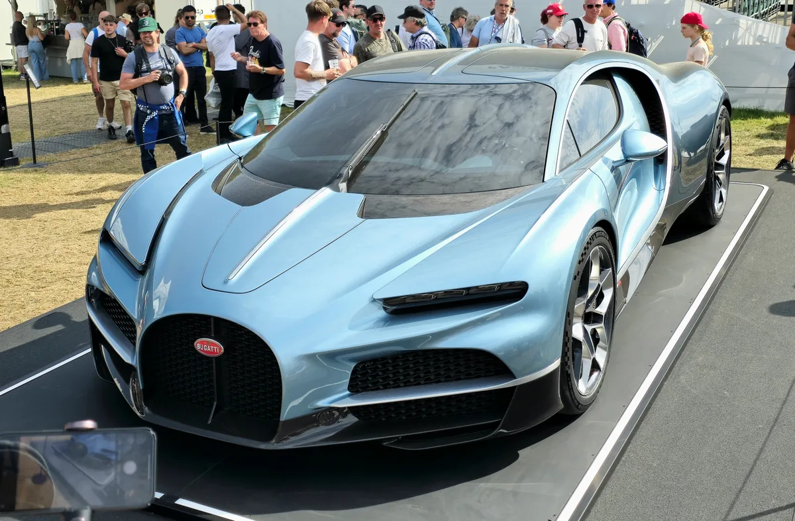
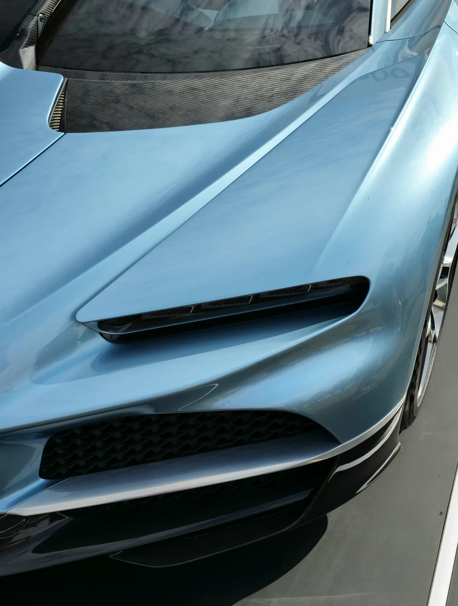

▲ 부가티 투르비옹. 8.3리터 자연흡기 V16이 1,000마력을 낸다 ⓒ MrWalkr, Wikimedia Commons (CC BY-SA 4.0)
페라리가 최근 내놓은 12칠린드리 마누알레는 "수동"이라는 이름을 달고 있습니다.
그런데 그 안에 있는 것은 8단 듀얼클러치입니다. 클러치 페달과 기어 레버의 감각을 소프트웨어로 재현하는 방식입니다.
부가티 CEO 마테 리막은 이 방식을 따라가지 않겠다고 했습니다. 몬터레이 카위크에서 수동 V16에 대해 질문받자 이렇게 답했습니다. "물론이죠. 당연합니다. 100% 동의합니다. V16에 수동이라니, 상상해 보세요. 진짜 수동으로요."
1. "가짜 수동"이란 무엇인가
먼저 페라리가 무엇을 만들었는지 짚어야 합니다.
12칠린드리 마누알레는 기계적으로 8단 듀얼클러치 변속기를 씁니다. 여기에 클러치 페달과 기어 레버를 붙였습니다.
페달을 밟으면 실제로 클러치판이 떨어지는 것이 아닙니다. 센서가 페달 위치를 읽고, 소프트웨어가 클러치가 끊긴 것처럼 동력을 제어합니다. 레버를 옮기면 그에 맞는 기어단으로 바뀝니다.
이 방식의 장점은 분명합니다.
- 고출력을 견딘다 — 듀얼클러치는 큰 토크를 안정적으로 전달한다
- 실수를 막는다 — 잘못된 조작에서 엔진과 구동계를 보호할 수 있다
- 개발비가 적다 — 기존 변속기를 그대로 쓰고 인터페이스만 얹는다
단점도 분명합니다. 운전자가 원한 것은 기계를 직접 다루는 감각인데, 그 감각을 시뮬레이션으로 되돌려주는 구조이기 때문입니다.

▲ 페라리 12칠린드리 마누알레는 8단 듀얼클러치에 클러치 페달과 레버를 얹은 방식이다 ⓒ Mr.choppers, Wikimedia Commons (CC BY-SA 4.0)

▲ 부가티는 클러치 감각을 소프트웨어로 흉내 내지 않겠다는 입장이다 ⓒ Calreyn88, Wikimedia Commons (CC BY-SA 4.0)
2. 8.3리터 V16이라는 물건
투르비옹의 엔진은 지금 시대에 나오기 어려운 구성입니다.
| 항목 | 수치 |
|---|---|
| 형식 | 8.3리터 자연흡기 V16 |
| 최고출력 | 1,000마력 (746kW / 1,014PS) |
| 최대토크 | 900Nm (664lb-ft) |
| 추가 동력 | 3개의 전기모터 |
| 현재 변속기 | 8단 듀얼클러치 자동 |
'자연흡기'라는 점이 핵심입니다. 이전 모델인 시론은 8리터 W16에 터보 4개를 달았습니다. 투르비옹은 터보를 떼고 배기량과 회전으로 출력을 만듭니다.
수동변속기와의 궁합은 여기서 나옵니다. 터보 엔진은 과급이 걸리는 시점 때문에 반응이 지연됩니다. 자연흡기는 스로틀 조작이 곧바로 회전으로 이어집니다. 힐앤토 같은 조작에서 차이가 큽니다.

▲ 시론의 8리터 W16 쿼드터보와 달리 투르비옹은 자연흡기다. 스로틀 반응이 즉각적이다 ⓒ Calreyn88, Wikimedia Commons (CC BY-SA 4.0)
3. 왜 어려운가 — 하이브리드가 걸린다
기술적으로 간단한 일이 아닙니다. 투르비옹은 V16에 전기모터 3개가 붙은 하이브리드입니다.
문제는 이렇습니다.
- 변속 중 동력이 끊긴다 — 수동은 클러치를 밟는 순간 엔진 동력이 차단된다. 그동안 전기모터는 계속 돌고 있다.
- 토크 합산 제어 — 엔진과 모터의 출력을 합치는 제어가 기어 단수를 사람이 정하는 상황에서 훨씬 복잡해진다.
- 내구성 — 900Nm를 사람이 조작하는 클러치로 받아내려면 클러치 용량과 페달 답력이 극단으로 간다.
보도된 해법 중 하나는 전기 어시스트를 빼는 것입니다. 수동 사양은 하이브리드 없이 V16의 자연흡기 출력만 쓰는 방식입니다.
그렇게 하면 절대 성능은 떨어집니다. 대신 차가 단순해지고 가벼워집니다. 하이퍼카 시장에서는 그 방향이 오히려 상품성이 되기도 합니다.
생산 계획은 나오지 않았습니다. 부가티의 솔리테르(Solitaire) 커스텀 프로그램을 통한 소량 제작, 한정 모델, 또는 정식 옵션 등 여러 가능성이 언급되는 단계입니다.
4. 수동이 다시 팔리는 이유
수동변속기는 성능 면에서 자동에 밀린 지 오래입니다. 듀얼클러치가 더 빠르고, 더 정확하고, 더 효율적입니다.
그런데 고성능·고가 시장에서 수동은 다시 값이 붙고 있습니다. 이유는 성능이 아니라 희소성과 관여감입니다.
- 중고 가치 — 같은 모델이라도 수동 사양의 시세가 높게 형성되는 사례가 많다
- 운전 경험 — 전기차 시대가 오면서 기계를 직접 다루는 경험 자체가 상품이 됐다
- 브랜드 서사 — "우리는 여전히 이런 것을 만든다"는 메시지가 된다
페라리가 12칠린드리 마누알레를 내놓은 것도 같은 흐름입니다. 다만 방식이 달랐고, 부가티는 그 차이를 명확히 하려 하고 있습니다.

▲ 수동변속기는 성능이 아니라 희소성과 관여감으로 값이 붙는 영역이 됐다 ⓒ Calreyn88, Wikimedia Commons (CC BY-SA 4.0)
5. 정리
부가티 CEO 마테 리막이 몬터레이 카위크에서 수동변속기 V16에 대해 "물론이다, 100% 동의한다"고 답했습니다. 그는 "진짜 수동"이라는 표현을 썼습니다.
페라리 12칠린드리 마누알레가 8단 듀얼클러치로 수동을 재현하는 방식인 반면, 부가티는 실제 수동변속기를 개발하겠다는 입장입니다.
투르비옹의 엔진은 8.3리터 자연흡기 V16으로 1,000마력·900Nm를 냅니다. 하이브리드 시스템과의 통합이 과제이며, 전기 어시스트 없이 V16만 쓰는 방식도 거론됩니다. 생산 일정은 발표되지 않았습니다.